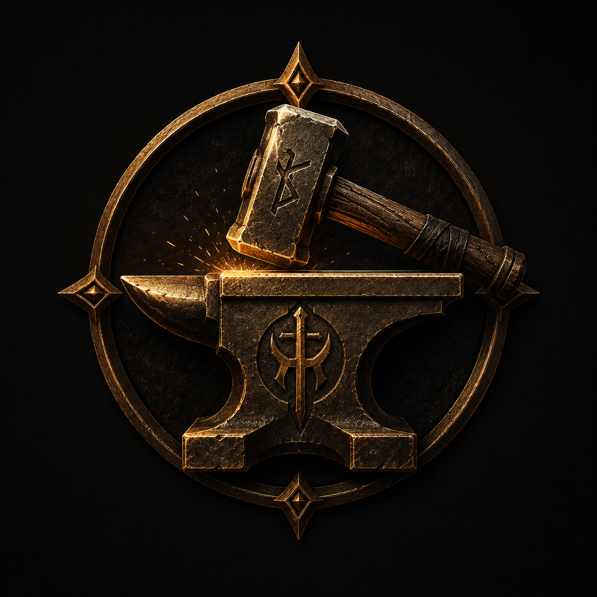

 FORJA EL FUTURO Cada contribución ayuda a transformar ideas en mundos, historias y videojuegos. Tu apoyo impulsa el arte, la programación, la música y el desarrollo de Elderforge Studios. Apóyanos en Patreon